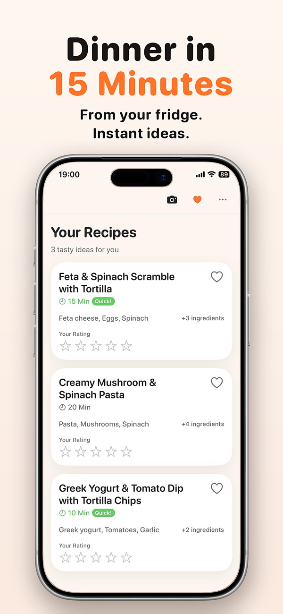
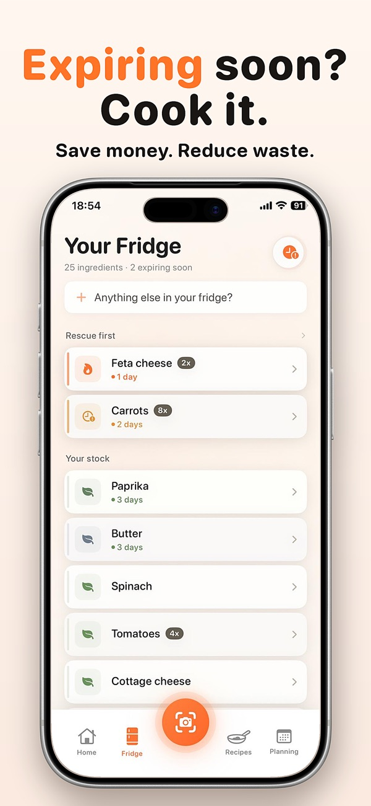
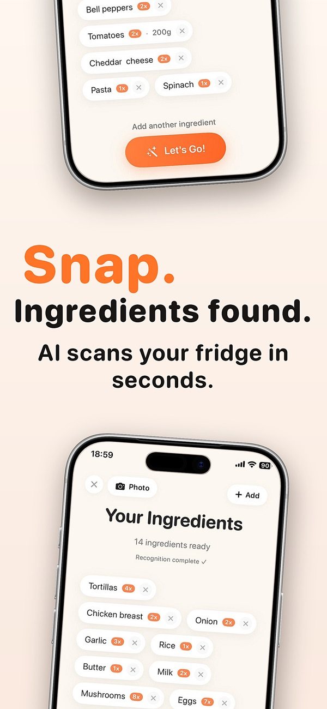
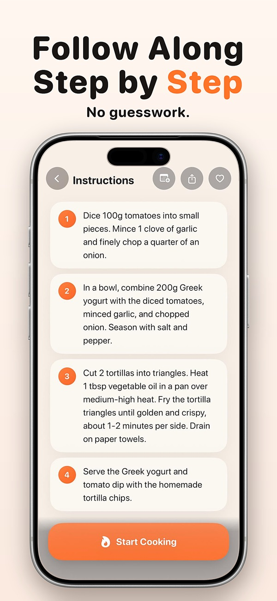

Uppetite looks at what you already have and suggests a dinner you can start in minutes. No meal plan to keep, no scrolling through 500 recipes.
Download free on the App Store



It is not a recipe library to browse for hours, and it does not plan your whole week. If you want a seven-day plan with a shopping list, a meal-planning app suits you better. Uppetite is for the evening when you're hungry, tired and staring into the fridge.
Yes, that is what Uppetite does. You take a photo of your fridge and it suggests a few dinners you can make with what you have, instead of showing you hundreds of recipes.
Uppetite does exactly that: it recognises the ingredients in the photo, lets you correct the list, and then suggests matching recipes with step-by-step instructions.
Downloading Uppetite and getting recipe ideas is free. Some premium features need a subscription; prices are shown in the app.
Yes. Uppetite is available in English and German.
Not yet. Uppetite is currently an iPhone app.